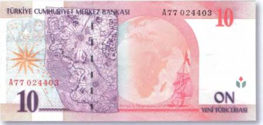

Тайны бумажных денег : «Первооткрыватели» Америки — теория вторая

Одно можно утверждать с полной уверенностью — Колумб был последним из «первооткрывателей» Америки. Но вот был ли он действительно первым? Перед нами банкнота, которая самым серьезным образом ставит этот исторический факт под сомнение и бросает тень на репутацию знаменитого генуэзца как первооткрывателя Нового Света (впрочем, его вины тут нет). Это турецкая купюра номиналом в 10 новых лир 2005 г. (рис. 72).

А на ней — изображение старинной карты (XVI в.). Но не просто какой-то карты, а той самой знаменитой карты Пири Райса (Piri Re'is). Пири Райс (или Рейс) был турецким адмиралом и командовал флотом в Красном море и Персидском заливе. По совместительству он еще и составлял морские карты, которые отличались поразительной для начала XVI в. точностью. Изображенная на турецкой банкноте карта была случайно обнаружена 9 ноября 1929 г. во дворце османских султанов Топкапи (Topkapi) в Стамбуле. Карта была неполной. Сохранились лишь два фрагмента. Но и этого было достаточно, чтобы понять, что эта находка сенсационная. На карте указаны очертания обеих Америк. При этом настолько правильные, что современные ученые убеждены — такой точности можно добиться, только картографируя местность… с большой высоты! Например, из космоса! Из пометок на полях, возможно, сделанных самим Райсом, следует, что карта была начертана между 1513 и 1517 гг. Но как такое могло быть, если совершенно достоверно известно, что первое кругосветное путешествие (экспедиция Магеллана стартовала лишь в 1519 г.) тогда еще только планировалось? На карте Пири Райса, составленной через 20 с лишним лет после первого плавания Колумба в Новый Свет, обозначена не только точная береговая линия Южной Америки, но и ее реки, и даже Анды! И это при условии, что Колумб картографированием вновь открытых территорий не занимался. Да и не мог он знать, как выглядела береговая линия континента. Ведь все его открытия ограничивались лишь бассейном Карибского моря. Известно, что, работая над своей картой, турецкий адмирал обращался за помощью к античным картографическим источникам. Но если это так, то и первых путешественников в Америку нужно искать задолго до появления на океанских просторах фрегатов и каравелл испанцев. И еще одна очень интересная деталь! Пири Райс утверждал, что «неверный по имени Коломбо» хорошо знал, куда плыл, и что на западе его ждала вовсе не Индия. При этом Райс упоминал какую-то таинственную книгу, которая досталась знаменитому генуэзцу якобы по наследству от самих тамплиеров. Существуют сведения, что жена Колумба была дочерью одного из великих магистров ордена [15]и имела доступ к тайным архивам, в которых было много древних книг и карт.
В июле 2006 г. в газете «Ени Шафак» турецкий историк Джезми Юртсевер высказал свое видение проблемы о пальме первенства в вопросе открытия Нового Света. Он даже потребовал переписать всемирную историю, потому как считает, что Америка была открыта турками-османами. При этом уже за четверть века до появления там Колумба она будто бы являлась колонией Османской империи. Юртсевер предположил, что и Христофор Колумб плавал туда с миссией турецкого султана.